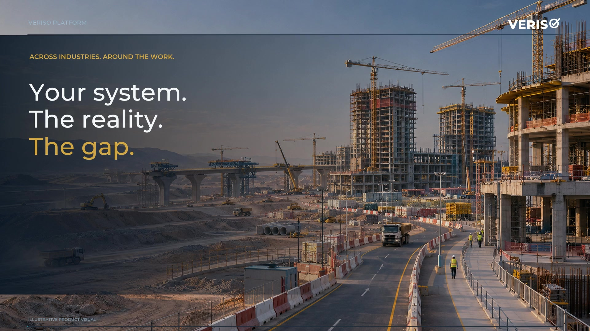
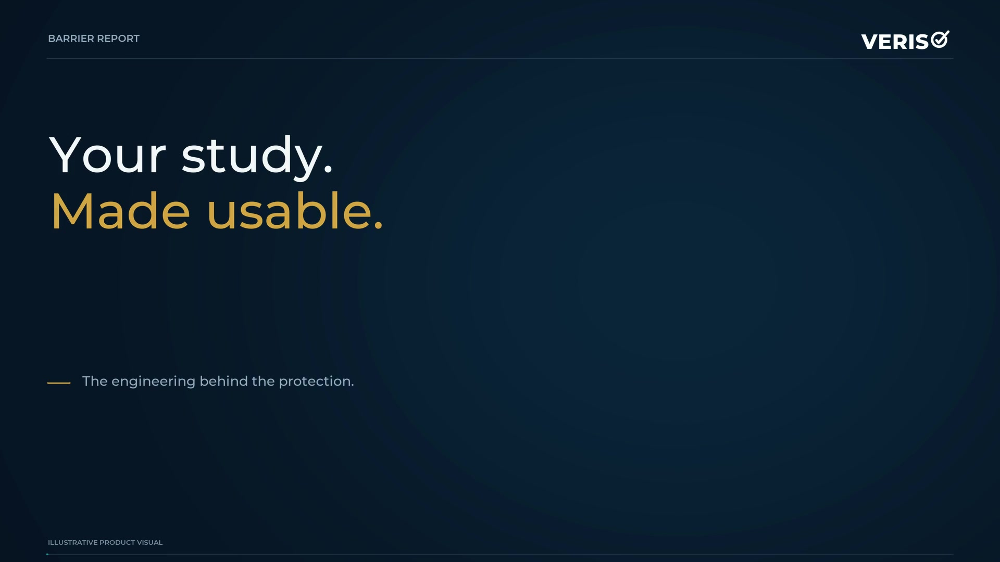

Review
Evidence and field verification

HSSE & Critical Risk
One practice covers health, safety, security and environment (HSSE), from the first policy to the live register. We establish it, run it as a service, or verify what you already run. The platform reads the information. Our practitioners make the calls and deliver the work.
The practice film · English · 3:20
See how we establish, run and verify the HSSE function, and the systems, controls and practical tools clients receive.
English narration and captions. Turn captions on in the player or read the full transcript below.
A new programme needs an HSSE function. An operating asset needs stronger controls. A board needs evidence it can act on. Ascendera’s practice offers three ways to engage: build it, run it, or prove it.
When a programme starts, we establish its policy, governance, organisation, competence requirements and risk-based budget. We develop or amend the management system in your templates. You receive a workable structure, standards and a first-year plan with clear owners and dates.
Where you need us to run the function, we provide accountable leadership and specialist practitioners under an agreed managed-service scope. Your board sets the direction. We manage the programme, contractor controls, assurance and reporting, with a handover plan from day one.
We focus on the risks that can cause the greatest harm: work at height, lifting, moving plant, confined spaces and excavation. Our practitioners define the controls and examine whether they are present and working. You receive a critical risk register and a verification regime.
For process safety, we facilitate hazard identification and HAZOP studies, connect hazards to barriers, and define safety-critical elements and performance standards. We support human-factors reviews and commissioning assurance. The result is a barrier register with owners, requirements and verification dates.
Before award, we assess contractor capability against the actual scope and agreed criteria. Before mobilisation, we check readiness for the work about to begin. You receive an assessment record, a readiness evidence pack and clear actions to address gaps before exposure.
For boards, owners and lenders, we provide independent assurance against an agreed requirement set. Field evidence records where, when and who verified the control. Confidence reflects the evidence available. Independent verification is kept separate from delivery of the controls being assessed.
When an assessment identifies a gap, we write the proposed fix in your own documents and templates. We assign action owners, support supervisor and verifier training, and return to test closure. Maturity reviews, repeated assessments and incident learning show whether changes have reached the work.
The practice also supports emergency preparedness and crisis exercises, occupational health, fatigue and wellbeing. Environmental controls, worker welfare and social performance can form part of the agreed scope. The focus is on the obligations and conditions of your project.
Our digital tools read the records, connect findings and maintain registers. Practitioners interpret the evidence and make the professional judgements. This puts more attention at the workface and gives leadership a clearer view across the estate. Your information and resulting registers remain yours.
Start with one asset, one critical risk, a system that needs fixing, or the whole HSSE function. We agree the requirement, examine the evidence and define what you will receive. Build it. Run it. Prove it. Ascendera.
Three ways to engage
Establish the function, team and system, or improve the one you already run.
Explore the service02Provide leadership and practitioners, manage the function and report to your board.
Explore the service03Assess performance, verify controls and test whether improvements work.
Explore the serviceDelivery in practice
Our delivery work has combined field verification and record analysis with revised procedures, critical control tools, leadership workshops and a prioritised improvement plan.
Evidence and field verification
Procedures and control tools
Training, reporting and actions
People, decisions and critical work
Human performance, critical thinking and ultra-high-risk delivery sit alongside the HSSE function. Commission a focused engagement or include them in function set-up, managed delivery or an improvement programme.
Observe how people lead, coordinate and speak up. Build the routines, coaching and practical exercises that help teams perform when the pressure rises.
What you receiveA performance baseline, team and leadership development plan, coaching sessions and a repeatable review method.
Explore the specialist workDiscuss your requirementsHelp people test assumptions, distinguish facts from inference, weigh uncertainty and challenge a decision constructively. Rehearse when to act, pause or escalate using realistic work scenarios.
What you receiveDecision exercises, practical decision aids, debrief records and actions to improve the next decision.
Explore the specialist workDiscuss your requirementsBring specialist support into work planning, supervision and crew preparation for high-consequence tasks. Connect the method, critical controls, competence, rescue arrangements and readiness checks.
What you receiveReviewed work methods, clear responsibilities, readiness checklists, practical crew assessment and tracked actions.
Explore the specialist workDiscuss your requirementsWhat we deliver
We agree the scope, deliverables and responsibilities before starting. Choose a service group or explore the detail below.
The function you need on day one, not in year two.
What you receiveA signed policy, a governance map, and a one year plan with owners and dates.
For a new developer, special purpose vehicle, joint venture or programme. Policy, governance, the legal and other requirements register, the first HSSE strategy and plan, and the standards the work needs before the first contractor mobilises.
The right people, in the right ratio, before the exposure starts.
What you receiveThe structure, the role profiles, the competence matrix, and the people in post.
Organisation structure, role profiles, competence requirements, selection support, placement and onboarding. Senior to field ratios set by the risk, not by the organisation chart you inherited.
What the board sees decides what gets fixed.
What you receiveCommittee terms of reference, the board pack template, the indicator set and the dashboard behind it.
HSSE committee terms of reference, the board pack, escalation rules, and three layers of indicators: outcome, high potential and leading. Each measure is tied to a decision someone has to make.
Cost the controls, not the department.
What you receiveA costed model by control and by phase, with the insource and contract decisions recorded.
An HSSE budget built from the controls the critical risks require. What to hold in house, what to contract, and where the platform replaces reading time with field time.
Amend what you run, or rebuild it.
What you receiveThe manual, the standards, the procedures and the permit set, in your templates and under your document control.
An integrated management system aligned to ISO 45001 and ISO 14001, a topic standards suite covering the hazards of heavy construction and operations, procedures and the permit system. If your system is sound, we fix the specific gap. If it is not, we write the suite.
Which controls actually hold?
What you receiveThe critical risk register, the verification regime, the critical permit set, and a current state for every control.
Fatal risk identification, control design, and verification that the control is in place at the workface. The register, the verification regime and the critical permit templates.
A safety case that reports the plant as it is.
What you receiveThe bow tie and barrier registers, the safety critical element list with performance standards, and the verification schedule.
HAZID and HAZOP facilitation, bow tie and barrier registers, safety critical element identification and performance standards, human factors, and commissioning assurance. The hazard study becomes a live register with owners and verification dates.
Can this contractor do this scope?
What you receiveThe criteria, the assessment record, and a ranked position for each bidder.
Capability assessed before award on published criteria, against the work rather than the brochure. The risk a contractor would import is tested before it arrives.
Controls in place before exposure begins.
What you receiveThe readiness gate, an evidence pack per contractor, and a record of what was in place when work started.
Readiness reviews and gates for each mobilising contractor and each new work front. Pre-mobilisation hazard identification, the critical controls that must exist on day one, and the evidence that they do.
We do not just find the gap. We write what fills it.
What you receiveThe graded findings, the evidence for each, and the amended documents ready to issue.
A full assessment of a site, a programme or an estate against one requirement set, named before the finding. Findings graded critical to low with the evidence behind each one, and the fix written in your own template, integrated not appended.
Run it again and the improvement is visible.
What you receiveThe maturity position by category, the improvement programme with owners, and the trend on the second run.
Maturity placed by critical risk category, leadership engagement, supervisor and verifier competence, and a programme that closes the gaps in order of exposure. Repeat the assessment and the trend shows.
The assurance claimed is the assurance held.
What you receiveA verification report that states its confidence grade and the evidence behind it.
Field validated verification for boards, owners and lenders. Desk findings are capped and say so. Field evidence lifts the cap. The grade is applied, not asked for.
What the organisation learns when something goes wrong.
What you receiveThe investigation record, the actions, and the evidence of closure.
Investigation, after action review, and corrective action that is tested closed rather than declared closed.
Your HSSE function, run by us, built to hand back.
What you receiveA running function, a monthly board pack, evidence-backed findings, and an agreed handover plan.
We manage strategy, the team, standards, contractor control, critical risk, verification and reporting. A named lead is accountable for the agreed service; your board retains direction and oversight. Interim leadership and specialist placement can form part of the scope.
Managed HSSE delivery
For a developer, programme or asset owner that needs a complete function, interim leadership or specialist support. We agree the outcomes, roles, authority and reporting from the start.
We lead the service, manage the practitioners and deliver the day-to-day work within agreed responsibilities.
Your board sets priorities and authority, with monthly reporting on performance, risks, actions and decisions required.
The platform helps read documents, connect evidence and maintain registers and reports, giving the team more time for professional review and field work.
The method, registers and data are yours. We agree the handover plan, knowledge transfer and acceptance criteria at the start.
How delivery works
Review information, requirements and field evidence to define the need.
Set deliverables, responsibilities, authority and measures of success.
Prepare and embed the changes, or run the function within the agreed scope.
Test whether the changes work and transfer the method and tools to your team.
Technology supporting delivery
See how the platform supports management systems, gap analysis, process safety and defined study reviews.

Management systems and improvement
Watch the filmProcess safety and barrier management
Watch the film
A defined study review
Watch the filmAlso offered
Start with your requirements
Build a function, run it or verify it. We start with your situation and agree a practical next step.